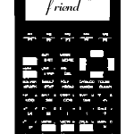
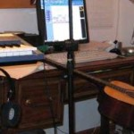
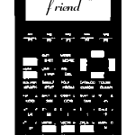
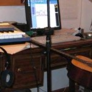

My music is being migrated to Soundcloud, Bandcamp, and Spotify as this site regresses to 1998-Web 1.0-style. Rock and roll.
New jams and some remixes of old songs to celebrate a special holiday.
- Pumpkin Spice
- Trig Or Treating With RPJR
- October 31, 2017
- Where Have All The Haunted Houses Gone (In 2017)?
- What Are You Afraid Of?
Quantum mechanics and modern day mysticism; the restorative powers of higher order harmonics; gnarled sonics, conversations, man and machine; chowning. Recorded 2012-2015 in Pawtucket RI. Includes bonus "90 Above Mix" ambient version.
- A Conversation With My Machines
- Arch
- Devotion
- Fireworks
- Gingerbread
- Harbour Road
- Keep Me Weird
- Omen
- Royce
- Sprites
- Wands
- Why Bother?
- Wlar
- A Conversation With My Machines (90 Above Mix)
- Arch (90 Above Mix)
- Devotion (90 Above Mix)
- Fireworks (90 Above Mix)
- Gingerbread (90 Above Mix)
- Harbour Road (90 Above Mix)
- Keep Me Weird (90 Above Mix)
- Omen (90 Above Mix)
- Royce (90 Above Mix)
- Sprites (90 Above Mix)
- Wands (90 Above Mix)
- Why Bother? (90 Above Mix)
- Wlar (90 Above Mix)
More rap, more rock and roll. Surveying topics that range from now-defunct Mayan prophecies to technological tribulations to JENGA tournaments, along with familiar themes of vegan life and (meta)physics, MATH ONE returns with a dynamic compilation of deep funk, pseudo hip-hop, and future folk.
- Prom Remix
- Towers
- Blocking Sites
- Friday2012
- Awkward Silence
- Thanks Giving
- Trig or Treat
- Science Intro
- Physics Hz
- Mysteries of Motion
- Science Knowledge
- I'm Electric
- The Scientist
- The Mummy
- We Do Work
- Turn up the Heat
- North Side
- Merry Christmas
- End of the Year
- What's for Lunch?
Icy driftiness, wandering through the universe. Recorded in MA 2010-2011
- Believing
- Dreaming
- Light
- Wandering
- Winds
- Moonrise

Computer lounge music. Modulated slow motion sketchiness.
- AT A
- Transmitting at 2400 baud
- Keyboard Cowboys
- A Righteous Hack
- The King of NYNEX
- Connected
- AT H0

MATH ONE presents a new recording of synth folk anthems and pseudo hip hop. These songs were written and performed throughout 2011 and continue to explore themes of searching for meaning in the scientific world, in a slightly rock and roll context.
- Going Back (to School)
- Power Supply
- In My Hood
- Here on Earth
- Save Us
- (You Can't) Catch Me
- AZTEC
- In the Name of Science
- Time Travel
- Tautology
Snowed in. Recordings of new songs from the second half of 2^010 along with two bonus remixes.
- Increase
- Mo Money Mo Mentum
- What Do You Want For Christmas?
- I'm On This Beet
- Mo Money Mo Dub
- Increased
MATH ONE returns to the studio, after a brief hiatus, and the result is "85". These tracks draw from the energy present in recent live performances, and are extended out with layers of electronic strata. This album is full of a love for sound and its possibilities, for math, and for life.
- Intro (Science Class)
- Four Dimensions
- Bringing It
- A History of Astronomy (Feat. Copernicrunk)
- Party for the Planet
- (Living in the) 21st Century
- TI Phone
- Thanks (For Spring)
- Math Life
- The Big Bang Theory
- (Back) At the Prom
- Outro (Stepping into the Future)
Recorded fall 2009 in Santa Barbara, CA. Electronics, vocals, acoustic guitar. Haphazard arrangements, tofu love.
- The World Looks Better At 5 AM
- Breakfast at Denny's
- I Need A Tree To Hug
- My Dancing Skills
- Maybe We Could Be Friends On Facebook
- Life's Glitches

Recorded during the first half of 2009 in Santa Barbara, CA. These tracks started out as some synthesizer / vocoder jams and descended into a dubbed out maximalist blur. The goal is vaguely defined, half-remembered love songs for the earth that lurk at the edge of perception.
- From Pole to Pole
- (I Can't Face) the Future
- Walking Out
- Sound System
- It's Time
- Saturday Night (Whatever)
- People of the World
Recorded spring 2009 in Santa Barbara, CA. Acoustic guitar, vocals, electronics.
- Hey Santa Barbara
- Vegan Valentine (2)
- The Day the Farmer's Market Sold Out
- I'm More Green
- Looking for Love on the Internet
- Taking Yoga Classes
Recorded autumn 2008 in SBCA using electric guitar and electric piano.
- Rain
- Morning
Recorded in mid-June, 2008, using electric guitars and various analog and digital signal processors.
- Part 1
- Part 2
- Part 3
- Part 4
- Part 5
- Part 6
- Part 7
- Part 8
- Part 9
This compilation collects various Math One singles, remastered versions of old tracks, and a few bonus tunes dedicated to various classes.
- Period B 2007
- Period G 2007
- Period G 2008
- Period F 2008
- Period B 2008
- TI85 (Remastered)
- Thanks (Remastered)
- What's Your Sine? (Remastered)
- 4x800 (Remastered)
- October 31
- Rolling on 700s
- At the Prom
- Where Have All the Haunted Houses Gone?
- Save the World, Be a Freegan
- Attleboro, Why?
- 85RAPS
- TI85 (Synth Mega Mix)
- Goodbye, Bishop Feehan
- (Unlisted Bonus Track)
M(athematical)-funk and future folk instrumentals. Guitars, basses, electronics. All sounds by Stephen C. Smith, 2006-2007.
- Principia Mathematica
- Be Green
- John Titor
- Schlessinger's Equation
- Postmodern Sounds
- The Fillmoe
- Meet Me in Bel Air
4150' is low-level noise and droned-out murk. No riffs.
- Medieval Miasma
- An Accursed Blade
- Crumbling Grotto
- Olde English
- Eldritch Copse
- The Black Death
This EP collects various tracks that may be familiar from live performances during the spring of 2006. Moving further into the modern sounds hinted at on past productions, MATH ONE emerges from the lab with some repetitive and imprecise electro-anti-funk, bringing lyrical examination of the trials and tribulations of modern high school (teacher) life.
- At the Prom
- From the East to the Black Hole
- Don't Try to Text Me
- In the Lab
- Keep It Mathematical
- The Only Party I Support
- Rolling on 700s (Tubular Remix)
- In the Lab (Don Orlando Remix)
- At the Prom (Version)

This was recorded during December of 2005 by S.Smith.
- Part 1
- Part 2
- Part 3
- Part 4
- Part 5
- Part 6
- Part 7

MATH ONE returns with a few new songs and some instrumentals.
- The Return
- October 30
- October 31
- Meta
- Freedom Fries
- Heisenberg?
- Dyn-
- Your Power Point
- Rolling on 700s
- Gerard D.
- The Edge
- It's Easy to Rock
This was recorded on the 16th and 17th of August, 2005, in Rehoboth, MA. No keyboards were used in the creation of this recording. All tracks written and performed by S.Smith.
- P. Field
- Canopy
- J. Mitchell
- This DJ
- Peninsula
- The Fifth River
Written and recorded during 2000-2005 using guitars, amplifiers, effects, computers, microphones, synthesizers, frogs.
- One
- Two
- Three
- Four
- Five
- Six
- Seven
- Eight
- Nine
- Ten
- Eleven
- Twelve
- Thirteen
- Fourteen
- Fifteen
Recorded in July of 2004 in Rehoboth, MA. All tracks were written and performed by S. Smith. Released in a limited-edition CDR distribution and in MP3 format here.
- Plastic
- My Computer Has a Virus And I Think It Came from You
- C/E (Instrumental Version)
- International Grandmaster
- Night W
- Your Car
- A Valediction
 



The album was recorded at home in Rehoboth, MA during the spring of 2004. All songs were written and performed by Stephen C. Smith. Instruments used include a cheap acoustic guitar, fitted with incorrect strings; synthesizer; two toy Casio keyboards; electric guitar; microphones; and various open-source and homemade software applications.
- Intro
- 4x800
- Theorem
- What's Your Sine?
- Interlude
- Thanks
- TI85
- Random
- Rad
- TI85 (Remix)
- Equations
- St. Patrick
- Outro
"Calculate", "Beet", "Scientist 2018"
"Holiday Coffeehouse/Thursday Night", "North Side", "Merry Christmas 2017", "TI-85"
"Pumpkin Spice", "October 31, 2017", "Thanks (Giving) 2017"
"End of Year 2017", "Towers"
"Newton", "Scientist (305 Remix)", "Prom (GS)"
"North Side 2016", "Merry Christmas 2016", "I'm On This Beet (In) 2016"
"It's Halloween", "Where Have All The Haunted Houses Gone In 2016?", "What Are You Afraid Of?", "TI-85"
"Prom Rap", "Towers"
"North Side", "Merry Christmas 2015", "I'm On This (2015) Beet"
"Beats + Knowledge", "October 31, 2015", "Turn Up The Heat", "Thanks Giving"
"Merry Christmas", "North Side", "What Do You Want for Christmas?", "I'm on This Beet"
"Giants (of Science)", "Going Back (to School)", "Thanks Giving"
"End of Year", "Towers", "Prom Rap", "What's For Lunch?", "TI-85"
special ALL-RAP performance! "Science Knowledge", "Physics Hertz", "Towers", "The Scientist"
"I'm Electric", "We Do Work", "North Side", "What Do You Want for Christmas?", "TI-85"
"Trig or Treat", "The Mummy", "Going Back (to School)"
"End of Year 2013/Life and the Nature", "Prom Rap", "Towers", "What's Your Sine 2013", "TI-85"
"Science Intro", "The Scientist", "Spring 2013", "Mo Money Mo Mentum", "At The Prom", "TI-85"
"What Do You Want For Christmas?", "North Side", "Merry Christmas", "Friday2012", "Midwinter", "I'm On This Beet"
"Mysteries of Motion", "Going Back (to School)", "October 31", "Where Have All The Haunted Houses Gone?", "TI-85"
"Prom Rap 2012", "Life and the Nature", "TI-85"
"We Do Work", "What's Your Sine, 2012?", "TI-85", "I'm On This Beet"
"Christmas 2011", "North Side", "What's Yr Sine?", "TI-85"
"October 31, 2011", "(You Can't) Catch Me", "TI-85"
"Rock and Rhodes", "End11", "In My Hood", "TI-85"
"Save Us", "I'm On This Beet", "Vegan Valentine", "At The Prom"
"Electricity", "At the Prom"
"What do you want for Christmas?", "I'm on this beet"
"Increase", "Mo Money Mo Mentum", "TI-85"
"Bringing It", "A History of Astronomy (feat. Copernicrunk)", "(Back) At the prom", "TI-85"
"Four Dimensions", "TIPhone", "TI-85", "What's Your Sine?"
CD release party for Mystic Surf
"85RAPS", "TI-85 Remix2", "At The Prom"
"TI-85", "October 31", "What's Your Sine?"
"Save the world, be a freegan", "AW/NR3"
"San Francisco", "A Reflection on (Nebula) Clouds", "Oakland"
"At the Prom", "Ion Exchange", "Where Have all the Haunted Houses Gone?", "Still Living in the Past", "October 31"
"When One Is French/Gerard D.", "Le TI-85"
"Where have all the haunted houses gone?", "Back from the future", "October 31"
I performed a largely improvised set of solo guitar, playing a piece called "Boston"
"At the Prom", "In the Lab", "The Only Party I Support"
"From the East", "Don't Try To Text Me; My Phone Is Off", "Freedom Fries"
"Halloween", "What's Your Sine"
This was a bilingual (French/English) set featuring "Gerard D.", "Freedom Fries", and "Disco F/1". Like some of the other new material, these utilize beats that I preprogrammed and played back along with several layers of guitar through a looping pedal.
This set featured some new material including "Meta", "Halloween", and "It's Easy To Rock".
The debut performance of G. Blaster
This event, in celebration of St. Patrick's Day, marked the premiere of "4x800" and "St. Patrick".
I played three selections: "Thanks", "What's Your Sine?", and "TI-85" for this so-called "Hot Chocolate House."